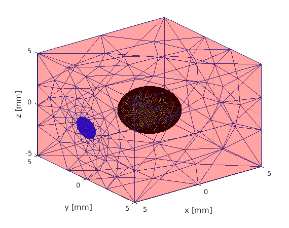
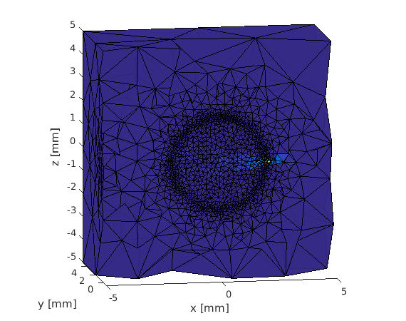

Netgen 3D example
This example demonstrates how to setup a 3D simulation on a geometry built with Netgen and run it. The geometry is a sphere within a cube. The sphere has a different refractive index than the cube. The mesh is created so that there is a circular domain within one surface of the cube. You can view the Netgen Python source code here
Contents
Import the NetGen file
clear all; if(exist('box_with_sphere.vol', 'file') ~= 2) error('Could not find the mesh data file. Please run netgen netgen_box_with_sphere.py'); end [vmcmesh regions region_names boundaries boundary_names] = importNetGenMesh('box_with_sphere.vol');
Remove incompatible boundaries from the mesh
Note that boundary 7 (sphere surface) is located within the medium, so it must be removed (see Netgen example in 2d). However, before removing it, the sphere surface can be used to find the elements within the sphere
elements_of_the_sphere = findElements(vmcmesh, 'region', vmcmesh.BH(cell2mat(boundaries(7)))); % store the indices of the elements within the sphere surface vmcmesh.BH(cell2mat(boundaries(7)),:) = []; boundaries(7) = []; % 0.1 is to make the search area slightly larger than the cylinder % that was used to create the lightsource (c.f. fincyl in the Netgen % source) to make sure all the boundary elements are contained.
Set constant background coefficients
vmcmedium.absorption_coefficient = 0.01; % absorption coefficient [1/mm] vmcmedium.scattering_coefficient = 0.01; % scattering coefficient [1/mm] vmcmedium.scattering_anisotropy = 0.9; % anisotropy parameter g of % the Heneye-Greenstein scattering % phase function [unitless] vmcmedium.refractive_index = 1.0; % refractive index [unitless] vmcmedium = createMedium(vmcmesh, vmcmedium);
Find boundary elements from Netgen file
Note that surfaces part of a planar region cannot be currently given separate boundary condition in netgen. However, we can use findBoundaries to find the place for the light source from the mesh.
startpoint = [0 0 0 ]; % note that these are exactly the same waypoint = [-5 0 0]; % coordinates as in the netgen source file radius = 1.0; % that are used to define a cylinder that creates a domain in the plane elements_of_the_lightsource = findBoundaries(vmcmesh, 'direction', startpoint, waypoint, radius+0.1);
Plot the Netgen mesh
figure trimesh(vmcmesh.BH(cell2mat(boundaries(:)),:),vmcmesh.r(:,1),vmcmesh.r(:,2),vmcmesh.r(:,3),'facecolor', 'r','FaceAlpha',0.2); hold % Highlight the location for the lightsource for the plot trimesh(vmcmesh.BH(elements_of_the_lightsource,:),vmcmesh.r(:,1), ... vmcmesh.r(:,2),vmcmesh.r(:,3),'facecolor', 'b'); % Show the sphere tetramesh(vmcmesh.H(elements_of_the_sphere,:), vmcmesh.r); xlabel('x [mm]'); ylabel('y [mm]'); zlabel('z [mm]'); hold off
Current plot held
Setup lightsources and optical coefficients
the elements within the sphere are used to set up region of higher refractive index
vmcmedium.refractive_index(elements_of_the_sphere) = 1.7;
vmcboundary = createBoundary(vmcmesh, vmcmedium);
vmcboundary.lightsource(elements_of_the_lightsource) = {'direct'};
Run the simulation
solution = ValoMC(vmcmesh, vmcmedium, vmcboundary);
Initializing MC3D... Computation uses 16 threads Computing... ...done Done
Visualize the solution
Note how sphere acts as a lens
halfspace_elements = findElements(vmcmesh, 'halfspace', [0 0 0], [0 1 0]); figure tetramesh(vmcmesh.H(halfspace_elements,:), vmcmesh.r, solution.element_fluence(halfspace_elements)); view(-10,10); % %hold xlabel('x [mm]'); ylabel('y [mm]'); zlabel('z [mm]');